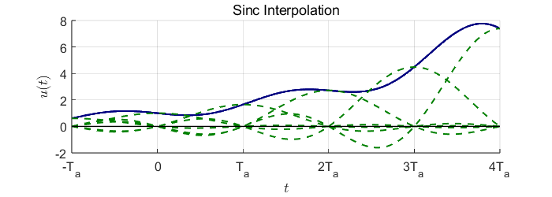

Analog Circuit Design
1 Introduction
In an increasingly digitalized world, microprocessors and digital systems form the core of almost all modern control and communication systems. Whether in smartphones, industrial automation, or high-speed networks, digital processors handle central computing tasks and make real-time decisions. However, while processing occurs purely in the digital domain, the physical world remains analog. Sensors, actuators, and other external devices generate continuous analog signals that must first be converted into a discrete form for digital processing (Bajdechi 2004).
This is where mixed-signal systems come into play, bridging the gap between the analog and digital domains. As the “brain” of nearly every control and communication system, the digital processor interacts with the external world through analog-to-digital converters (ADCs) for receiving analog signals and digital-to-analog converters (DACs) for sending analog outputs (Bajdechi 2004).
As shown in Figure 1, the general block diagram of an ADC designed for converting low-pass signals consists of an anti-aliasing filter, a sampler, and a quantizer (Rosa and Río 2013).

1.1 Sampling
A set of key components is essential for converting an analog signal into a discrete-time representation. A fundamental aspect of this process is sampling, as it ensures the conversion of an analog signal into a discrete-time signal (Bajdechi 2004).
In practical applications, sampling can occur in one of three modes. If the highest frequency present in the signal is limited to \(f_{\max}\), the sampling approaches are categorized as follows (Williams and Taylor 2006):
- Critically sampled: \(f_s = 2 f_{\max},\)
- Oversampled: \(f_s > 2 f_{\max},\)
- Undersampled: \(f_s < 2 f_{\max}.\)
Critical sampling refers to setting the sampling rate to the lowest possible value that still satisfies the sampling theorem. If this condition is not met, aliasing occurs, preventing accurate reconstruction of the input signal due to overlapping frequency components. To ensure that the highest frequency of the analog signal remains below the Nyquist frequency, an analog prefilter - known as an anti-aliasing filter - is typically placed between the signal source and the ADC. A well-designed anti-aliasing filter effectively attenuates signal energy above the Nyquist frequency. In practice, the input signal is often affected by noise, which may contain frequency components outside the desired range. Therefore, it is also essential that the filter removes out-of-band noise, as it could otherwise alias into the signal band after sampling and degrade the quality of the sampled values (Pavan, Schreier, and Temes 2017). Undersampling can occur either deliberately or unintentionally. In both scenarios, the sampling rate is chosen to be lower than the Nyquist frequency. As a result, aliasing takes place (Williams and Taylor 2006).
Furthermore, it is important to note that sampling results in a periodic repetition of the spectrum. The following example illustrates this:
If the conditions of the sampling theorem are met, the input signal can be fully reconstructed by filtering with an ideal low-pass filter with a cutoff frequency \({{\omega_g}}\) and an amplitude of \({{T_a}}\) (Goldenbaum 2022).
\[ H_{LP}(\omega) = T_a \, \operatorname{rect}(\omega / 2\omega_g). \tag{1} \]

In the frequency domain, an ideal low-pass filter with a specific cutoff frequency is used to fully reconstruct the signal. Since this corresponds to a multiplication with a rectangular function in the frequency domain, it results in a convolution with the sinc function in the time domain. The sinc interpolation is a series expansion in which the maxima of the individual sinc functions coincide with the sampled values. Each sample point is associated with a corresponding sinc function. Consequently, the original function can be reconstructed as a weighted sum of sinc functions, where each sample value corresponds to a sinc function shifted by the sampling period \(T_a\). The superposition of these sinc functions then reconstructs the original function (Meyer 2019).

1.2 Quantization
Quantization is a nonlinear, memoryless operation (Pavan, Schreier, and Temes 2017). It refers to the conversion of a continuous-valued signal into a signal with a finite set of values (Goldenbaum 2022). Unlike the sampling process, quantization is an irreversible operation, leading to a loss in the resolution of the digitized signal (Rosa 2011).
The quantization operator is typically described by a quantization characteristic:

The quantization level \(Q\) defines the respective quantization intervals. These intervals are determined by the word length \(q\) (also referred to as the bit width). The relationship is given by \(Q = 2^q\). The greater the word length, the more quantization intervals exist. This means that the quantization becomes more precise, as the difference between the actual value and the quantized value continuously decreases (Goldenbaum 2022).
The delta (\(\Delta\)) represents the accuracy and is defined as \(\Delta = 2/Q\). This implies that as \(Q\) increases, the word length \(q\) also grows, and \(\Delta\) becomes smaller. Since the step size between quantization levels decreases, the resolution improves (Goldenbaum 2022). After quantization, digital signals are generated. Each quantization interval is assigned a unique code number.
The quantization process also imposes a limitation on the performance of an ideal ADC, as an error is introduced during the conversion of the input signal from a continuous to a discrete amplitude representation. This error, commonly known as quantization error, will be discussed in more detail in a later chapter.
2 Delta-Sigma ADCs

A Delta-Sigma ADC leverages advanced signal processing techniques to achieve higher resolution than conventional ADCs. Oversampling increases the sampling rate beyond the Nyquist frequency, spreading quantization noise over a wider frequency range. Noise shaping further pushes this noise into higher frequencies, where it can be effectively removed by digital filtering. Finally, decimation reduces the sample rate while preserving the signal’s integrity, resulting in a high-precision digital output.
2.1 Oversampling
If an ADC operates faster than \(2f_{\text{max}}\), it is considered an oversampled ADC. In this case, the oversampling ratio (OSR) is a design parameter that indicates how many times \(f_s\) is larger than the minimal value required by the Nyquist theorem.
\[ OSR = \frac{f_s}{2 f_{\text{max}}}, \tag{2} \]